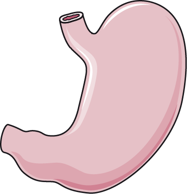

Accueil
|
Le corps entier
L’ESTOMAC :

Localisation :
région thoraco-abdominale
Pathologies associées :
gastrite, ulcères, reflux gastro-oesophagien, polypes gastriques, hernie hiatale
L'estomac est un organe de l'appareil digestif. Il est destiné à recevoir et digérer les aliments.